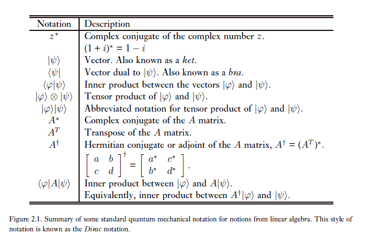
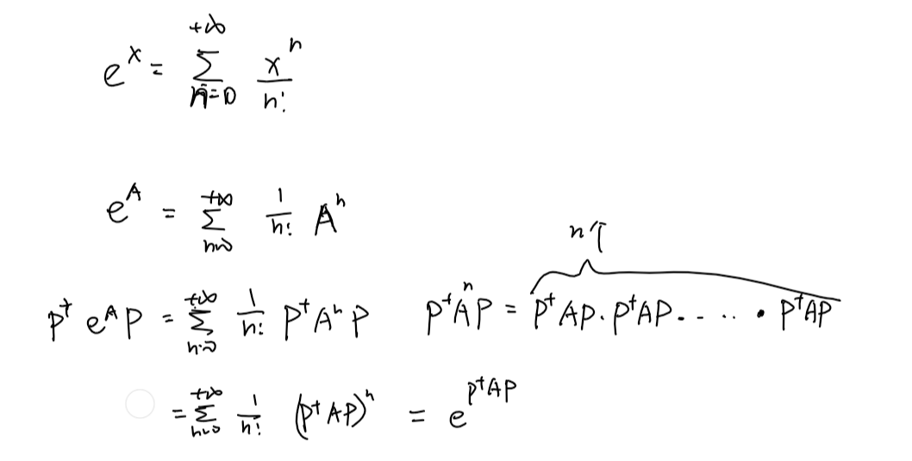
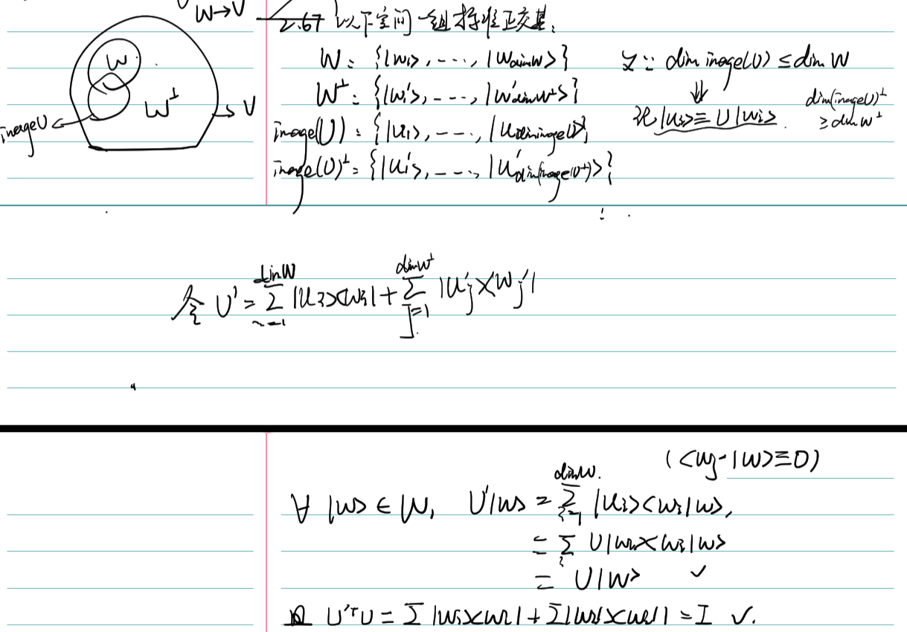

吾生而有涯而学而无涯 以有涯而逐无涯 殆矣！
# 量子力学引论
# 线性代数基础
# 记号

# 线性算子与矩阵
-
定义在空间 V 到空间 W 上的线性算子为对任一输入是线性的函数 满足：
称 A 为线性算子。
-
线性算子常用矩阵来表示。考虑线性算子
设 是空间 的一组基， 是空间 的一组基，若：
则 为 A 的一个矩阵表示。
上式的意义为，把 A 作用于 V 中的每个基向量（此时 A 是抽象的算子而非矩阵），一定会得到 W 中的一个向量。而这个向量可以用 W 的基表示。将每个 V 中的基向量对应的 W 中的坐标放在一起，就可以精确地描述这个算子实际上进行了怎样的运算。
# Pauli 阵
# 内积
-
内积定义为 的函数，满足对任意：
-
-
-
范束定义为|||v\rang||=\sqrt{\lang v|v\rang},\lang i|j\rang=\delta_
-
Schmidt 正交化
# 外积
-
对 外积 定义为 的算子，满足:
-
令 为空间 的一组标准正交基，有:
所以，
-
对任意一个 的算子 A，它都可以表示成外积关系。
所以对于输入基 和输出基，A 的矩阵表示中
-
Cauchy-Schwarz 不等式
# 特征值与特征向量
- 若矩阵 A 是酉相似与对角阵，则它是酉可对角化的。即：
# Hermite 算子与伴随
-
设 A 是空间 上的线性算子，则存在且只存在一个空间 上的算子 使得：
-
-
设 是 d 维空间 的 k 维子空间，且 为 的一组标准正交基，定义：
则 P 是 Hermite 的，即。我们称 P 为 “到空间 W 上的投影算子”，它的意义是，对于任意一个 V 中的向量，，其实就把 分解到 W 的基上，从而去除和 W 正交的分量。（和数学中定义幂等算子为投影算子不等价！）
P 的正交补算子 就是把向量投影到补空间上。显然
-
投影算子满足，但反之不成立！
-
矩阵 A 是正规的当且仅当。矩阵 A 可酉对角化（酉相似于对角阵，可对角化）当且仅当 A 是正规矩阵。（谱分解定理）
-
正规矩阵是 Hermite 的当且仅当它的特征值全为实数。
-
矩阵 A 是酉的当且仅当
酉矩阵保持内积
因此，酉算子有很好的性质：
若 为一组标准正交基，则定义 也为一组标准正交基，且
反之，若 都为标准正交基，则 是酉的。
-
酉矩阵所有特征值模均为一。即，Pauli 矩阵都是 Hermite 和酉的。
-
正定和半正定算子，即考量 是否恒大于（大于等于）零。
# 张量积
-
设 为 的一组标准正交基， 为 的一组标准正交基，则 为空间 (nm 维) 的一组标准正交基。
-
张量积满足：
-
-
由此，可以定义定义在 上的线性算子 满足：
(有点类似同构映射保持运算的意思。)
-
同样，可以定义 上的自然内积为：
-
一个具体的张量积：Kronecker 积
-
张量积对一些运算是分配的：
-
两个酉算子张量积是酉的，两个 Hermite 张量积是 Hermite 的，两个半正定算子的张量积是半正定的，两个投影算子的张量积是投影算子。
# 算子函数
-
算子函数定义在正规算子上。
-
算子的迹定义为算子任意一个矩阵表示的对角线元素和。不难证明，且矩阵的迹在酉相似下保持不变。故可定义为任意一个矩阵表示。
-
# 对易式与反对易式
-
对易式，反对易式，若，则称 A,B 为对易的。
-
同时对角化定理：设 A,B 是 Hermite 算子，当且仅当存在一个标准正交基，使得 A 和 B 在这个基下同时是可酉对角化的，则，在这种情况下，称 A,B 可同时对角化。
-
# 极式分解和奇异值分解
-
极式分解：令 A 是空间 V 上的线性算子，则存在酉算子 U 和半正定算子 J,K 满足：
证明：
-
奇异值分解：令 A 是一方阵，则必存在酉矩阵 U,V 和一个非负对角阵 D，使得：
简单证明：
其中 D 的对角元素称为 A 的奇异值。
# 量子力学假设
# 假设一：状态空间
-
假设 1：任意一个孤立物理系统都有一个称为系统状态空间的复内积向量空间（即 Hilbert 空间）与之联系，系统完全由状态向量所描述，这个向量是系统状态空间的一个单位向量。
-
例：一个量子比特的状态空间（二维）。状态空间中的任意状态向量可写作
而 常称为状态向量的归一化条件。
-
任意线性组合 理解为状态 具有幅度 的一个叠加。
# 假设二：演化
-
假设 2：一个封闭量子系统的演化可以由一个酉变化来刻画。即系统在时刻 的状态 和在 的状态 可以通过一个仅依赖时间 的酉算子来联系：
-
Pauli 矩阵中 X 被称为比特翻转（bit flip）矩阵，Z 被称为相位翻转（phase flip）矩阵。
-
假设 2‘：封闭量子系统的演化由薛定谔方程描述：
其中， 称为封闭系统 Hamilton 量固定 Hermite 算子，常用实验得出。
而因为 H 是 Hermite 的，故有谱分解：
其中，状态 习惯上称作能量本征态（energy eigenstate）或定态（stationary state），而 是 的能量。最小的 E 称为系统的基态能量（ground state energy），相应的能量本征态（或本征空间）称为基态（ground state）。
* 状态 常被称作定态是因为它们随时间的变化只是一个数值因子：
-
薛定谔方程的解：（2021-07-16by 武汉大学数学李平学姐）
- 因为 是 Hermitian 的，故酉相似于对角矩阵。
- 又因为，有，即。
- 令，即有，即线性微分方程组：。
-
解得，有，其中 为 的初始值。写成矩阵形式，即。
- 而。
- 
- 所以。
-
常有以下说法：
“把一个酉算子应用到一个特定的量子系统上”（applying a unitary operator to a particular quantum system），量子系统在和 “我们” 相互作用后将不再封闭。但状态向量仍可以用另一个 Hamilton 量相近似。
# 假设三：量子测量
-
假设 3：量子测量由一组测量算子 描述，这些算子作用在被测系统状态空间上，指标 表示实验中可能的测量结果。若在测量前，量子系统最新状态是，则结果 发生的可能性是：
且测量后系统的状态为：
假设内容包括：测量算子 满足完备性方程：，因此：
-
我自己对 “quantum measurement operator” 的理解：
，其中， 表示实验结果。譬如一个系统有状态，测量这个系统这样一个实验的结果只有 2 种 (1, 2)：
-
若，我理解为：若系统状态为，则测量结果一定为 1.
若，我理解为：若系统状态为，则有 75% 的概率测量到结果 1，25% 概率测量到结果 2.
因此，在这样的假设下，若不知道系统状态下进行测量，若测量到结果 1，则无法确定系统是哪个状态；但如果测量到结果 2，则确定系统状态为。
-
但若，则发现系统状态与实验结果是一一对应的。即出现结果 2，可以肯定系统状态是；出现结果 1，可以肯定系统状态是。
若存在这样的测量实验（测量算子），则状态 是可区分的。
-
特别地，还有一种情况。若系统只有两个状态，某个测量实验却有三个测量结果。如果状态为，则测量结果一定为 1 或 2（至于是哪个不一定），如果状态为，则测量结果一定为 3。显然这时 也是可区分的，也因为此时可以把 和 合并。所以我认为，如果两个状态是可区分的，则在合并测量算子后，只剩下和状态一一对应的测量算子。
-
-
-
关于可测量量（Observable）为什么可以用一个矩阵表示：
根据我的理解，在经典物理下，“测量” 就是
的映射。即对于不同的系统状态可以得出不同的测量结果。
在量子力学中，可以用线性空间中的矢量 表示系统状态，而量子力学一大假设是测量结果一定是可测量量的本征值，且对应此时测量结果的系统状态为属于此本征值的本征矢。
所以我认为，将 “可测量量” 用一个形如 的 Hermite 算子表示，其实就是，构造了一个测量算子，使得利用这个测量算子可以根据系统状态计算出各个结果出现的概率。
也就是说，可测量量的算子表示正好代表了一个测量实验，而这个测量算子正好可以用于根据系统状态来推断不同测量结果的概率（的映射）。
根据我的理解，对于任意一个系统状态，采用测量算子，则 就是系统状态为 时，对其进行测量得到结果是 的概率（我认为是对系统进行测量！而不是对可测量量进行测量，可测量量只反映了可能的测量结果及其过程），特别地，若 正交于测量算子 的属于本征值 的本征空间，则概率为 0；否则概率为 向 的本征空间投影的模长平方。
可测量量 = 对系统进行测量所有可能得到的结果以及系统状态信息的整合
# 证明非正交状态的不可区分：
- 设状态 非正交。反设它们可区分，则存在测量算子，使得:
-
此时因为 不正交，则，其中 和 正交，且
又因为：
而
所以:
矛盾，故证毕。
- 其实本质在于 在 上有分量，因此 状态对应可能的测量结果，状态 也一定会有一定概率产生这个结果，故不可区分。
| 物理含义 | 数学表象 |
|---|---|
| Observable | Hermitian operator |
| Possible values (实验可能的结果) | Eigenvalues |
| States in which result is unambiguous | Eigenvectors |
注意最后一个，States in which result is unambiguous 表示系统在这个状态时，根据实验测量结果可以断定出系统的状态。根据我的理解，此时系统的状态与实验结果是一一对应的。而这样的状态只能是可观测量的本征矢量。
# 投影测量
-
投影测量由被测量系统状态空间上的一个可观测量 Hermite 算子 M 描述，该可观测量具有谱分解：
其中， 为到特征值 m 的本征空间的投影算子（ 为该本征空间的一组标准正交基）：
有
测量状态 时，得到结果 m 的概率为：
测量后，状态变为
显然， 满足：
-
投影测量有很多很好的性质：
- 测量结果期望
通常记，方差
- 测量结果期望
-
Heisenberger 测不准原理
不妨设 是 Hermite 矩阵，设
则有，所以有：
又 Cauchy-Schwarz 不等式以及 是 Hermite 的
所以有
此时，令， 是两个可测量量的矩阵表示
有
所以有：
- 测不准原理的正确理解：制备具有相同状态 的大量量子系统，并对其中一部分以测量算子 去测量，另一部分以 去测量。则测量的结果（ 的本征量）的标准差要满足上面不等式。
# POVM 测量
- 对于一个一般测量算子，定义半正定算子，则有。于是算子集合 足以确定不同测量结果的概率，算子 称为与测量相联系的 POVM 元，完整的集合 称为一个 POVM。
- 同样可以给出更自然的 POVM 定义：满足 (1) 每个算子 是半正定的 (2) 的算子集合 是一个 POVM。（因为半正定性，也可以反求出。
- 投影测量的可重复性：（根据我的理解）如果投影算子 包含足够的维数，则（投影无信息损失），此时, 所以有，即无论进行多少次投影测量都不会改变系统的状态。
- 注意 POVM 测量并不等价于一般测量！对于一个一般测量，可对应唯一一个 POVM：，但是给出一个 POVM，你却不能直接得出一般测量，因为只要 是酉的就都满足。这也应证了 POVM 为什么用于 “只关心概率结果而不关心系统测量后的状态”，因为给出 可以测出概率，但无法得出 也就无法得到系统测量后进入的状态。
- * 存在系统可能的状态集合以及一个 POVM，使得根据测量结果推断出的系统状态不会出错，但是这是以有时候无法判断为代价。
# 相位（phase）
-
全局相位因子：，状态 与 在统计意义上是相同的。因为
-
相对相位：如果两个模长相同的幅度 a，b 满足，则我们说幅度 a，b 差了一个相对相位。
特别地，若两个状态 在这同一组基下每个幅度都差了一个相对相位，则称这两个状态在这组基下差了一个相对相位。
相对相位与全局相位不同之处在于相对相位需要依赖基的选择。在某个基下差了相对的相位的状态有物理统计差别，而差了全局相位的状态却没有。
# 假设四：复合系统
-
假设 4：复合物理系统的状态空间是分物理系统状态空间的张量积，若将分系统编号为 1 到 n，系统 i 的状态为，则系统的总状态为。
-
一个算不上推导的解释：为什么选择张量积来描述联合系统的状态？
由叠加性原理：若 是系统的两个状态，则它们的任意叠加 也应该是系统的一个状态，其中。
考虑系统 A 的一个状态，系统 B 的两个状态，系统 AB 的两个状态，则显然对于任意，都有，其中 分别是系统 A,B 的状态，所以 也是联合系统 AB 的状态。
其实我认为满足这样性质的运算有很多，方便选了张量积。
-
关于一个投影测量加上一个酉算子就可以实现一般测量：
设有一个状态空间为 Q 的量子系统，希望在系统 Q 上进行由算子 定义的测量。
引入一个辅助系统，其状态空间为 M。该系统有一个与测量结果一一对应的标准正交基（即）。
设 M 有一个状态为，对于 Q 中所有状态，在 上定义酉算子 U:
因此有:
可以发现如此定义的酉算子 是保持内积的。
由 Ex2.67，存在一个扩张到酉算子，使得 (证明在下面)
令 作用于，考虑对复合系统的投影测量算子
测量后系统状态变为:
其中，M 系统状态 被测量不会发生变化，而 Q 系统状态变为，就此借用酉算子 + 引入辅助系统实现了对 Q 系统的一般测量。
-
关于 Ex2.67*“设 V 是 Hilbert 空间且 W 是其子空间。设 是一个保持内积的线性算子，即。求证存在 U 的扩张算子，使得。”*

-
-
其实复合系统状态记号很多样。根据我的理解
# 纠缠
- 考虑双量子比特系统状态，它并不能表示为两个单量子比特系统状态的（张量）积。复合系统这种独特的状态称为纠缠态（entangled state），起因尚不明确。
# 总览
- 假设 1 说明了如何描述一个孤立的量子系统的状态；假设 2 说明封闭量子系统的动态由薛定谔方程，也就是酉演化来描述；假设 3 说明了如何通过规定测量的描述来从量子系统获取信息；假设 4 说明如何将不同的量子系统合成复合系统。
- 量子力学不同于传统经典力学在于无法直接观察系统的状态向量。因此诸如位置，能量，速率等经典力学里可以直接观测的量在量子力学中将变得不再基本。量子系统好像一个隐藏和封闭的世界，每次观测都将引起状态的改变。
# 初等量子力学的一个应用：超密编码
-
问题：Alice 要给 Bob 传输一份两个经典比特的信息 (00, 01, 10, 11)，但却只被允许发送一个量子比特。
-
首先，Alice 和 Bob 共享一对纠缠态的量子比特，Alice 拥有第一个量子比特，Bob 拥有第二个量子比特。
-
若想传输 00，Alice 作用 I 于第一量子比特上:
-
若想传输 01，Alice 作用 Z 于第一量子比特上:
-
若想传输 10，Alice 作用 X 于第一量子比特上:
-
若想传输 11，Alice 作用 iY 于第一量子比特上:
-
-
作用后得到的四个状态称为 Bell 态（或 Bell 基，EPR 对）不难验证它们是正交的。因此在 Alice 将第一个量子比特发送给 Bob 后，Bob 可以通过测量实验可靠区分这四种状态，即得到了传输的信息。事实上，传输信息的过程 Alice 永远不需要和第二个量子比特打交道。
-
特别地，若有人劫持了 Alice 发的第一个量子比特，由于对于任意测量算子， 结果都一样，则劫持者也无法只通过第一个量子比特解密信息。
# 密度算子
- 密度算子是一种数学上等价于状态向量的可以用来描述量子力学的工具。
# 量子状态的综述
-
设量子系统以概率 处在一组状态 中的某一个，则称 为一个纯态的系综（ensemble of pure state），系统的密度算子（密度矩阵）定义为：
-
封闭量子系统的演化由酉算子来描述。系统初态为 的概率为，则演化发生后，系统会以概率 进入状态。于是：
观测算子 测量系统时，
考虑测量后的状态：
注意： 是得到结果为 m 之后的状态！因此在计算测量得到结果为 m 后的密度算子 时，应为：
由概率论基本原理，有：，所以：
-
处于某一个精确已知状态的量子系统称为处于纯态（pure state）。在这种情况下，。否则，就处于混合态（mixed state），是在 的系综中不同纯态的混合.
显然，对于一个纯态，, 而对于一个混合态，. 有时人们用混合态表示纯态和混合态 (可以把纯态看作特殊的混合态).
-
混合态密度算子计算：如果系统以概率 处于某混合态 (注意这里不是纯态的系综了！), 则系统的密度算子为. 证明如下:
不妨记 其中(i 固定) 是一个纯态的系综。则
称 为具有概率 的状态 的混合.
-
因此，可以考虑混合态测量后的进入的混合态:
其中，如果系统得到结果为 m, 则系统会进入状态. 即测量后系统以概率为 处于状态. 故测量后系统状态为:
# 密度算子的特征
-
一个算子 是和某个系综 相联系的密度算子，当且仅当：
- 是半正定的。
证明如下：
若 是密度算子，有，。
反过来，因为 是半正定算子，有谱分解，其中 为非负特征值， 是正交的。又因为，所以 可以和系综 联系起来。
# 四大假设的重写：
-
假设 1：孤立的量子系统状态仍与 Hilbert 空间相关联，但系统可以被一个作用在状态空间上的密度算子完全描述，密度算子是一个迹为 1 的半正定算子。如果系统以概率 处于状态，则系统状态为
-
假设 2：封闭量子系统的演化由一个酉变换描述，即：，其中 只依赖。
-
假设 3：处于状态为 的系统在一组测量算子 的测量下，得到结果为 的概率为，若得到结果，则测量后系统状态为，其中测量算子满足：。
-
假设 4：复合物理系统的密度算子是各分系统的张量积：。
# 密度矩阵系综中的酉自由度
-
考虑状态，若让系统以 概率处于状态，以 概率处于状态，则其密度矩阵为。
考虑状态，让系统以 概率处于状态，以 概率处于状态。则系统密度矩阵为：。所以其实密度矩阵的本征值和本征矢只能描述众多系综中的一种。下面考虑怎样的两个系综会产生同样的密度算子。
-
定理：对于系综 和，当且仅当：
时，与两个系综相关联的密度矩阵相等。（ 是一个酉矩阵）注意要向较小的系综中补充零向量直至俩系综大小相等。
- 证明：
因为，考虑 的第 k 行去乘 的第 j 列：\delta_{kj}=\sum_i U_{ki}^\intercal U_{ij}=\sum_iu_{ik}^*u_
所以。
反过来，设。 是厄米特的，考虑其一个谱分解，取 标准正交。令 是任意一个正交于 的一个矢量，则:
因为： 正交于 正交于，所以后者是前者的子空间，每个 都可用 线性表示：
所以
又因为算子组 是正交的，所以当且仅当 时， 才能取 1，否则都是 0，这样右式才能等于左式。
所以补齐零向量后，，这里 是个酉矩阵 (因为)。同理：
其中， 都是酉的。故有：
其中 也是酉的。证毕。
# 关于 Bloch 球面
-
在 Ex2.72 中证明了对于任意密度算子，都能将其表示为，先考虑一个纯态，。
不妨用三维单位球面上一点，则有
用二倍角展开后，有
* 特别地，当且仅当 时，该状态为纯态。
# 约化密度算子
-
假设有物理系统 A，B，A 和 B 的复合系统的密度算子是。则针对系统 A 的约化密度算子。其中 是一个算子映射，称为系统 B 上的偏迹。定义为：
若 AB 的状态为 则系统 A 的状态为
-
考虑 Bell 态 的纯态密度算子,。
对第二量子比特取迹，得到第一量子比特的约化密度算子：
注意到，所以第一量子比特是个混合态。联合系统的状态已知（是纯态），而子系统却处于混合态。这是量子纠缠现象的另一特点。
-
为什么选择偏迹（partial trace）？（这部分理解模糊，掺杂大量个人理解）
首先，单量子比特系统状态为，在投影测量 下
现在，双量子比特系统状态为，在投影测量 下测量概率为：
。
所以投影测量 就是在保证系统观测统计信息不变的情况下 在复合系统上的扩张。
下面我们寻找一个逆变换，已知有复合系统状态，且，需要求出子系统状态，满足：
。对每个 m 都成立（注意扩张算子一定是 和 的张量积，否则测量结果将不是 1~m，将无法找出保持测量结果的扩张。我们求的是子系统状态而不是子测量算子）不妨设。不难证明 也是一个合法的内积形式。于是可以借此内积找出一组标准正交基：\
-
这里简单说明下 所以正交
所以标准
将 分解到这组标准正交基上，可见
注意到，在这组标准正交基下的坐标已经求出且唯一。故 是唯一的。
不难验证 满足
即找到了唯一一个映射 保持统计信息。
-
# 初等量子力学的一个一个应用：量子隐形传态
-
假设 Alice 和 Bob 共享一个 Bell 态（以 为例），Alice 拥有第一量子比特，Bob 拥有第二量子比特。现在 Alice 有一个单量子比特的状态 的信息想传给 Bob，但她只能传输经典信息。
-
首先，将它们看成一个整的复合量子系统状态
Alice 手上有第一个量子比特和第二个量子比特。
-
Alice 把第一个量子比特和第二个量子比特送入受控非门：
* 受控非门即：当且仅当第一量子比特为，第二量子比特取非。
-
Alice 把第一个量子比特送入 Hadamard 门：
重新分配，可得:
为六个三量子比特状态的叠加态。
-
由于 是正交的，Alice 可以通过测量准确区别出自己手中两个量子比特的状态（就四种）。譬如投影测量
进行测量后，Alice 可以得到测量结果，分别以 1/4 的概率得到结果 1,2,3,4。
-
若得到结果 1，则系统状态进入 状态。
此时将得到的结果 1 的消息发给 Bob，Bob 就知道自己手里的量子比特状态就是
-
若得到结果 2，则系统进入 状态。
此时将得到结果 2 的消息发给 Bob，Bob 将自己手中的量子比特送入非门，就得到了
-
若得到结果 3，则系统进入 状态。
此时将得到结果 3 的消息发给 Bob，Bob 将自己手中的量子比特送入 Z 门，就得到了
-
若得到结果 4，则系统进入 状态。
此时将得到结果 4 的消息发给 Bob，Bob 将自己手中的量子比特先送入 X 门，再送入 Z 门，就得到了
-
-
至此 的信息已经传到了 Bob 手中。
-
-
考虑 Alice 测量后系统的状态，系统分别以 1/4 的概率处于 和 状态（即是这四个状态都以幅度为 1/2 的叠加态）。
所以测量后系统的密度算子为
Bob 手中的单量子比特的约化密度算子为 不依赖于。所以此时 Bob 进行的任何测量都测不出。只有 Bob 接受了来自 Alice 的测量结果后才可以针对性的进行状态变换。这也验证了量子信息传递仍需等待经典信息传输，不可超光速。
# Schmidt 分解和纯化
-
(Schmidt 分解定理) 设 是复合系统 AB 的一个纯态，则存在系统 A 的标准正交基 和系统 B 的标准正交基，使得：
其中， 是空间密度算子 的本征值 (可以证明它们本征值一样) 且为非负实数，称为 Schmidt 系数。
证明：（先考虑 A,B 维数相同的情况）
首先，根据复合系统以及张量积的性质， 已经构成了复合系统 AB 向量状态空间的一组标准正交基。故 可写成它们的线性组合。对于某个复数矩阵:
由奇异值分解，其中 D 是非负实对角阵，U,V 是酉矩阵。故：
令，则
由于 U,V 的酉性，验证 构成一组标准正交基：
若 A，B 维数不同可以补一些零向量和给 A 添行 / 列使得 A 仍为方阵。
-
简单结论：设 是复合系统 AB 的一个纯态，则，那么，那么子系统 A 的约化密度算子, 子系统 B：，发现子系统 A，B 的密度算子本征值相同，这将带来很好的性质。
-
基 分别称为 A 和 B 的 Schmidt 基，非零 的个数称为状态 的 Schmidt 数（它在某种意义下反映了系统 A 和 B 的纠缠的 “量”）。Schmidt 分解在酉变换下保持不变。，则，其中，U 是定义并作用在在系统 A 上的酉算子。
-
（纯化）考虑系统 A 的状态，它有个标准正交分解，构造系统 R，与 A 有相同的状态空间。为复合系统定义纯态：
，其中 是系统 R 的一组标准正交基。则。
此时，。此时我们说， 是 的纯化。有时记。
-
Schmidt 分解和纯化的关系：子系统 A 混合态标准正交分解 纯化时会定义一个纯态，而纯态 在 Schmidt 分解时 系统 A 部分的 也正好可以把 对角化，即是其标准正交分解的基。并且 Schmidt 系数是 的本征值的平方根。
-
对于一个复合系统状态 对其 Schmidt 分解操作是：
-
计算，将 对角化
-
计算，将 对角化
-
得到结果
-
# Bell 不等式和 EPR 对
-
考虑在经典力学中，物体的物理属性是独立于测量的。例如静止网球的位置不会因为多次测量而改变。那么现在构造物体 A，B，它们分别有两个物理性质，A 的物理性质记为 P 和 Q，P 和 Q 在观测后只能得到结果为 + 1 或 - 1. 同样 B 有物理性质 S 和 T，测量结果也只能为。在现实生活中我们认为对不同物体的测量是独立的。而测量结果（对两个物体各两个性质测量，共四个结果）:
所以期望
上式被称为 Bell 不等式或 CHSH 不等式。
-
但是在量子力学中，构造一个双量子比特状态，将第一个量子比特给 Alice，第二个 Bob。同样根据现实我们可以认为 Alice 和 Bob 的测量是独立的。那么考虑下面可测量量：
不难计算这些可测量量的本征值都是。那么对状态 有：
于是 与经典力学中得出的 矛盾！
-
某光子实验已经证明了自然不服从 Bell 不等式。
推导出 Bell 不等式的过程需要很多细微的假定，书上只总结了两个要点：
（1）物理性质有独立于观测的值。这称为实在性（reality）假定。
（2）Alice 的测量结果不影响 Bob 的测量结果。称为定域性（locality）假定。
这两个假定合称定域实在性假定。在直观上是有道理的，但是量子力学预言其中至少有一个是错误的。
-
EPR 实验中的反关联
考虑这样一个双量子比特状态，不难看出它是一个纠缠态。
接下来考虑这样一个可测量量，其中 是一个三维单位向量。显然，对于任何单量子比特系统状态，M 的测量值一定是（即 M 的本征值，Ex2.35 结论）。记 为 M 的两个本征矢（ 对应本征值 1， 对应 - 1），即有：
代入，有
下面证明：
两边同时取模：
又因为，两式相加，代入上连等式
所以事实上，，对于某个实数。故
差了一个全局相位，所以在测量上， 和 没有区别。故此时考虑可测量量 的投影测量，状态 第一量子比特分别以概率 得到结果 1，-1. 但如果第一量子比特得到结果 1，系统将进入 状态，此时第二量子比特测量结果必为 - 1. 同样，若第一量子比特得到结果 - 1，则系统进入 状态，此时第二量子比特测量结果必为 1.
而状态 也有这样的性质，这称为 EPR 实验中的反关联。
l